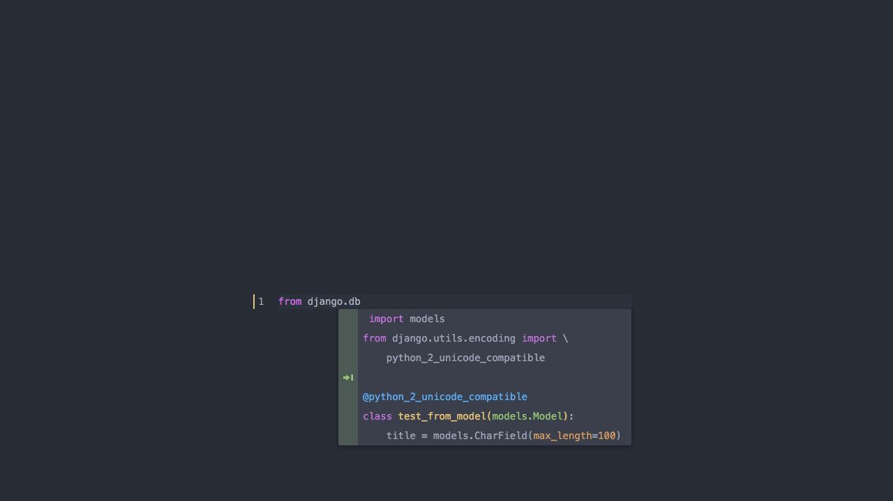
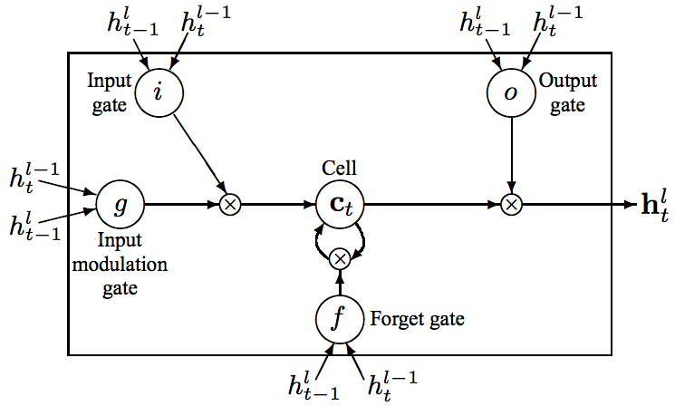
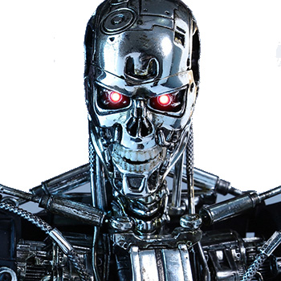
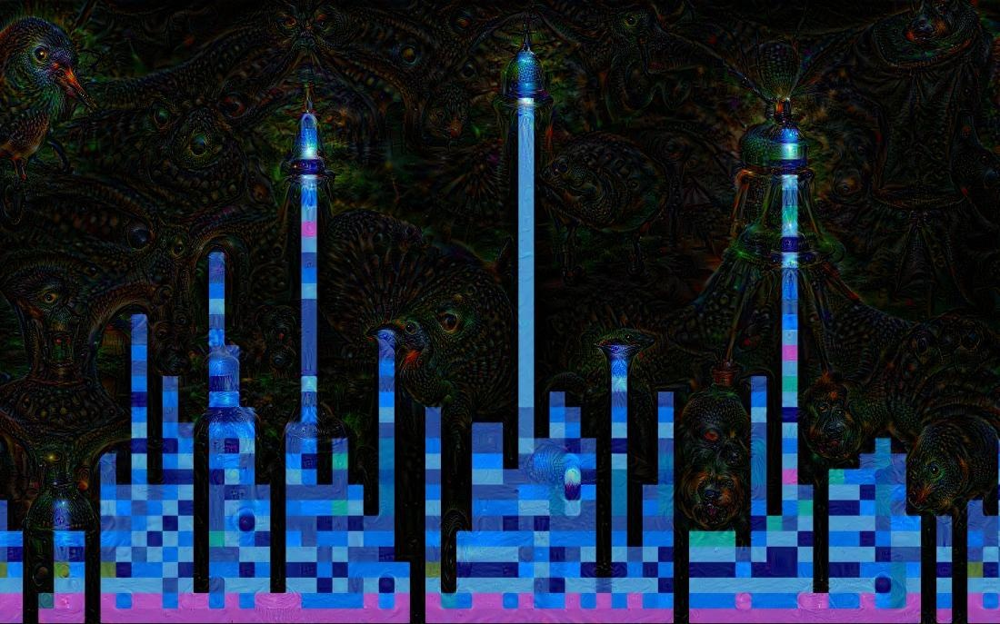

Using deep RNN to model source code
Eiso Kant, source{d}
Using deep RNN to model source code
Eiso Kant, source{d}

Plan
- Motivation
- Source code feature engineering
- Network architecture
- Results
- Other work
Motivation
Everything is better with clusters.

Motivation
Customers buy goods, and software developers write code.
Motivation
So to understand the latter, we need to understand what and how they
do what they do. Feature origins:
- Social networks
- Version control statistics
- Source code
- Algorithms
- Dependency graph
- Style
Feature engineering
Requirements:
- Ignore text files, Markdown, etc.
- Ignore autogenerated files
- Support many languages with minimal efforts
- Include as much information about the source code as possible
Feature engineering
(1) and (2) are solved by
github/linguist
...source{d} has it's own which feels the same but works 10x faster
- Used by GihHub for language bars
- Supports 400+ languages

Feature engineering
(3) and (4) are solved by

- Highlights source code (tokenizer)
- Supports 400+ languages (though only 50% intersects with
github/linguist)
- ≈90 token types (not all are used for every language)
Feature engineering
Pygments example:
# prints "Hello, World!"
if True:
print("Hello, World!")
# prints "Hello, World!"
if True:
print("Hello, World!")
Feature engineering
Token.Comment.Single '# prints "Hello, World!"'
Token.Text '\n'
Token.Keyword 'if'
Token.Text ' '
Token.Name.Builtin.Pseudo 'True'
Token.Punctuation ':'
Token.Text '\n'
Token.Text ' '
Token.Keyword 'print'
Token.Punctuation '('
Token.Literal.String.Double '"'
Token.Literal.String.Double 'Hello, World!'
Token.Literal.String.Double '"'
Token.Punctuation ')'
Token.Text '\n'
Feature engineering

Feature engineering
- Split stream into lines, each line contains ≤40 tokens
- Merge indents
- One-hot encoding with variable magnitude
- Some tokens occupy more than 1 dimension, e.g.
Token.Name reflects naming style
- ≈200 dimensions overall
- 8000 features per line, most are zeros
- Mean-dispersion normalization
Feature engineering

Feature engineering
Though extracted, names as words may not used in this scheme.
We've checked out two approaches to using this extra information:
- LSTM sequence modelling (the topic of this talk)
- ARTM topic modelling (article is pending in our blog)

Network architecture
Idea: apply NLP-style LSTM to Python source code.
We will experiment with Django.
Parse the code into tokens with Pygments and treat each as a word.
Comments, strings should be squashed - we do not want NLP inside our NLP.
Network architecture
{ "if": 1, "self": 2, ".": 3, "active": 4, "(": 5, ")": 6,
"and": 7, "Weather": 8, "raining": 9, "\n": 10,
"open_umbrella": 11, "*": 12, "hands": 13 }
Network architecture
Model from "Recurrent Neural Network Regularization" by Zaremba et al. ([arXiv](http://arxiv.org/abs/1409.2329))

Network architecture
| Optimizer |
GD with clipping to 5.0 |
| Learning rate |
1.0 |
| Weight decay |
0.5 after 4 epochs |
| History size |
20 |
| First layer size |
200 |
Network architecture
Implementation:
- Python3 / Tensorflow / NVIDIA GPU
- Really slow even with GPU (1 hour to complete 13 epochs)
- Interactive forward prop app
Results
- Perplexity is extremely low: < 3 (on PTB dataset you get 100)
- The network predicts the first 1-3 tokens that exactly the programmer wants to write
- After first 1-3 tokens a fantasy starts
- The more the project is homogeneous, the better looks the fantasy
Results
Before:

After:

Results
Can be useful for
- Next-gen intelligent code completion which adapts to the project being developed
- Coupled with CNN on higher levels the network can turn abstract algorithms expressed with a natural language into source code
- Self-programming AI
- ...and source{d} uses it only to embed the features

Other work - CNN for code classification
- Classify source code abstracts between 2 different projects
- Presented at RE·WORK in Berlin (June 2016)
- 50% copied to here
- Slides
Thank you
We are hiring!

We are hiring!

 src-d/kmcuda
src-d/kmcuda